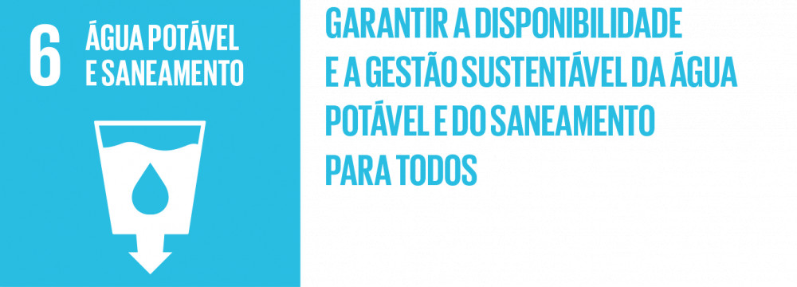

Visão Geral: ODS 6 – Água potável e saneamento
O acesso à água potável e ao saneamento é essencial para a dignidade humana e para o bem-estar. É um direito humano básico e uma questão central para a promoção de uma sociedade sustentável. A água é um recurso finito e vital para a sobrevivência de todos os seres vivos no planeta.
...